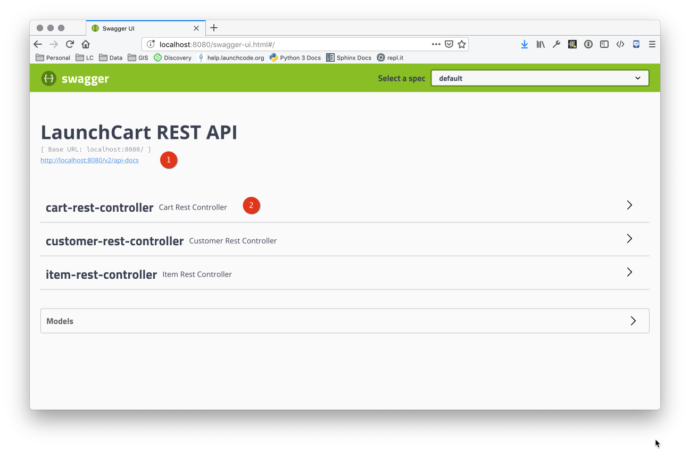
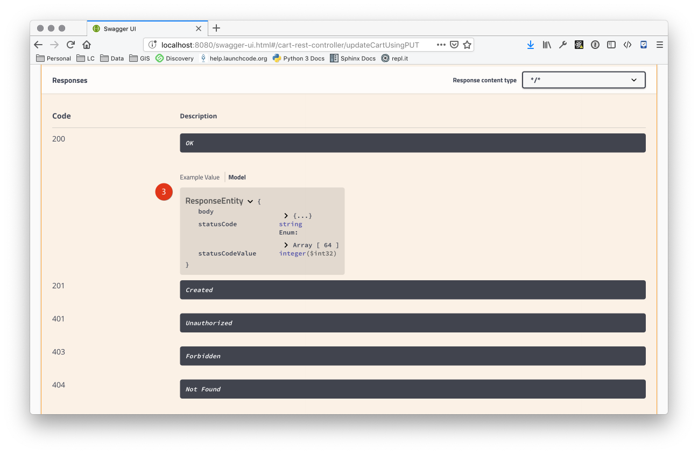

Studio: Springfox and Swagger
In this studio, we will be learning how to use Springfox to autogenerate the Swagger docs.
Getting Started
Create a rest-springfox-solution branch off of your launchcart/rest-studio-solution branch.
Warning
Do not create the branch off of one of the walkthrough branches (rest-swagger-starter or rest-swagger-solution), since we manually created Swagger docs in that branch.
Warning
We will be using some annotations and methods to configure Swagger documentation (via Springfox) for our API. There are Java-based configuration tools provided by Swagger that are not supported by Springfox, so not everything you find on the web will work in this context.
View the Generated Swagger Documentation
Now start your application. Navigate to http://localhost:8080/login to log in, and then go to http://localhost:8080/swagger-ui.html to view the generated Swagger docs.
Warning
Because of authentication code included in the LaunchCart application, this URL will not load unless you are logged in.
Tasks
Bypassing Login
We provided a class for you called AuthenticationInterceptor that handles what routes are allowed to users and non users alike. Take a look at the file to see what it is doing for you.
Figure out how to change AuthenticationInterceptor.preHandle to allow the Swagger docs to load when you are NOT logged in.
Hint
Log out of LaunchCart, and then try to access your Swagger docs page with your browser’s developer tools opened to the Network tab.
Note which resource requests return 3xx errors (that is, are redirected to the login screen). You’ll need to modify AuthenticationInterceptor.preHandle to allow these requests through.
Display Only API Endpoints
Swagger is currently showing all endpoints, including non-API endpoints that return HTML. Figure out how to display only /api endpoints in the Swagger report.
Overriding Default Info
While the info provided by default in the auto-generated docs is fine, it could definitely be better. For example:
- There isn’t a lot of info about our API.
- API methods are grouped and named by controller name rather than resource.
- The return types of some methods doesn’t reflect the actual return type. For example, in the case of
PUT /api/items the stated return type is ResponseEntity.


Let’s address each of these.
Grouping API Methods by Resource
When using Springfox with Spring Boot, Springfox is able to determine a lot about your API based on the Spring Boot annotations that you use. There are also additional annotations provided by Swagger that can be used to further enrich your API documentation.
In particular, the @Api annotation can be applied to a class to add tags and other settings. Read an overview of the @Api annotation to learn how to add tags to each of the methods within a class.
Adding API Info
We have already added one custom piece of info to our docs: the title. We can use additional methods of the ApiInfoBuilder class to add other info object properties such as contact, license, version, and so on.
By referring to the following resources, add at least 3 additional informational fields to your documentation:
Documenting Correct Return Types
Springfox scans our classes, reading annotations and method signatures (i.e. the number and type of paramters and return values) to determine the structure of our API. It assumes–reasonably, in many cases–that the return type of a method is the same as the return type of the API endpoint. This is not always the case, however.
The @ApiOperation annotation allows you to specify the return type of an API method, among other things. Apply this annotation to each method with a ResponseEntity return type to properly specify the return type of the method.
Hint
The linked example demonstrates several parameters of the @ApiOperation annotation, but you will only need two. The rest are optional and/or don’t apply to our situation.
Turn in your Work
- Commit and push your work to GitLab
- Create a merge request and post it to slack
- Notify the instructor that you are done, along with the name of the branch that you completed your work in